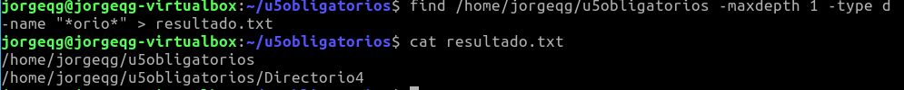

Título
Práctica Sistemas de archivos Linux Ubuntu (II)
Jorge Quintana González 1ºDAM
Índice
Introducción
Ir al índice
En esta práctica crearemos una máquina virtual de Lubuntu 20.04/22.04 LTS
Desktop para entregar la práctica tendrás que rellenar la información solicitada y realizar
los pasos adecuados
Objetivo de la memoria
Ir al índice
El objetivo del trabajo es conocer y utilizar los comandos necesarios para realizar los ejercicios que se nos plantean.
Material utilizado
Ir al índice
-
Marca y modelo del procesador: AMD Ryzen 7 5800X 8-Core Processor
-
Capacidad de la memoria RAM: 16 GB
-
Tipo de dispositivo de almacenamiento y su Capacidad (GiB): SSD 101,514 GiB
Desarrollo:
Ir al índice
1. Modifica el fichero apuntes1.txt, añádele el texto que viene a continuación (exactamente igual) y contesta a las siguientes preguntas.
-
1.1Muestra las líneas dónde aparece la cadena de texto “archivo”.
-
1.2Muestra las líneas dónde aparezca la palabra “fichero” completa sin distinguir entre mayúsculas y minúsculas, es decir, que no aparezca como subcadena de otra (ficheros -> no sirve este fichero).
-
1.3Cuenta cuantas veces aparece la palabra “un”.
-
1.4Lleva el resultado del apartado anterior a un fichero llamado cuantasUN.txt
-
1.5Muestra las líneas dónde no aparezca la cadena de texto “sistema” sin distinguir entre mayúsculas y minúsculas y añade el resultado al fichero creado en el apartado anterior.
2. Modifica el fichero apuntes1.txt, añádele el texto que viene a continuación (exactamente igual) y contesta a las siguientes preguntas.
-
Marta
-
Antonio
-
Luisa
-
Norberto
-
Bartolome
-
Gerardo
-
Pedro
-
Roberto
-
Esteban
-
Nuria
-
2.1Ordena el fichero y muestra las últimas 5 líneas.
-
2.2Igual que el anterior y lleva el resultado a un fichero llamado u5obligatorios32.
-
2.3Muestra las 3 primeras líneas de las 6 últimas líneas del fichero.
-
2.4Ordena el fichero y de las primeras 6 líneas selecciona las últimas 4 líneas y de esas muestra las 2 primeras.
3Crea en tu directorio personal una carpeta llamada “u5obligatorios” dentro de esta carpeta crea los siguientes ficheros y directorios y responde a las preguntas.
-
3.1Lista todos los archivos y directorios que contengan la cadena de texto “ero”.
-
3.2Lista todos los archivos y directorios que comiencen por “d” o por “D”, que a continuación tenga la cadena de texto “irec” y que a continuación tengan cualquier cadena de texto de 0 ó más caracteres.
-
3.3Busca todos los directorios de nuestra carpeta que contengan la cadena de texto “orio” llevando el resultado a un fichero llamado resultado.txt.

-
3.4Cuenta el número de ficheros que tienes en la carpeta “u5obligatorios” y añade el resultado al fichero resultado.txt.
Problemas encontrados en cada actividad, solución y/o sugerencias
Ir al índice
A la hora de realizar la actividad 3 me he encontrado con dificultades, en el sentido de encontrar los comandos adecuados. Sin embargo, he podido solucionar el problema, encontrando maneras alternativas de cumplir lo que solicita el ejercicio.
Conclusión
Ir al índice
Han sido unos buenos ejercicios para prácticar nuestros primeros comandos en Linux. Personalmente, me sigue resultando un poco
confuso algunas pantallas del comando man, pero supongo que es cuestión de acostumbrarse.